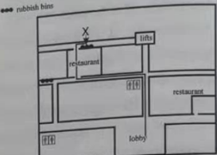

Unit 1
A 1 f 2 h 3 e 4 a
5 g 6 b 7 c 8 d
B (Possible answers)
1 The story took place about 1,800 years ago.
2 I think Zhuge Liang would come up with a good plan to defend Xicheng.
C1 3,4,6,2,1,5
C2 (Possible answers)
1 The kingdom of Shu and the kingdom of Wei were involved in the story.
2 He needed to defend Xicheng.
3 I think Zhuge Liang felt nervous because he was not sure if Sima Yi would fall for his plan. If Sima Yi did not have a suspicious mind, he would have attacked and captured Xicheng.
D1 (Possible answer)
1 calm¡ªA wise person should not panic under pressure.
2 open-minded¡ªA wise person should be willing to listen to, think about or accept different ideas.
3 careful¡ªA wise person should take care and not act hastily.
4 clever¡ªA wise person should be quick at learning and understanding things.
5 knowledgeable¡ªA wise person should know a lot.
D2 (possible answers)
1 I think Zhuge Liang chose to play the lute to show he was well prepared and was not worried.
2 I have read stories about great leaders such as Sun Bin. Sun Bin was a military strategist who lived during the Warring States period. At the Battle of Maling, Sun Bin led the army of the Qi state. He let his army pretend to be defeated in a series of small battles with the Wei army. In order to trick the Wei army, Sun ordered the Qi troops to reduce the number of cooking stoves and create a false impression that the Qi army was getting smaller in size. Then the Wei army suffered a crushing defeat and Sun Bin won a big victory.
Vocabulary and grammar
A 1 were... happy with 2 doubted
3 less 4 agreement
5 sent... to prison 6 brave
B 3 What 4 did they 5 knew
6 not 7 doesn¡¯t he 8 runs
Listening and speaking
A
1 at the age of seven.
2 His teacher asked them to add up all the numbers from 1 to 100.
3 He sat and thought about the question.
4 He added l to 100. That¡¯s 101. Then he added 2 to 99. That's also 101.
He found there were fifty pairs of numbers. So the answer is fifty times 101.
5 Since that day, his teacher gave him special lessons in Maths.
More reading
A 1 2 December 1805 2 Russian
3 Austrian 4 stronger 5 small groups
6 where to attack 7 the right side
8 The middle and the left sides
9 the centre
10 The French army/Napoleon/Napoleon¡¯s army
B 1 c 2 b 3 d 4 c
5 b 6 b 7 a 8 a
C1 1 He won the Nobel Prize for physics.
2 It was used to measure the height of a building.
3 Because he thought Bohr was making some kind of joke.
4 Because Bohr could think of more answers than him.
5 Give the barometer to the janitor and ask him the height of the building.
6 (Students' own answers)
Writing
A
born
Alan Turing was borned in London, England, in 1912. gr
attended
He atended Cambridge University from 1931 to 1934. sp
Turing was a mathematician and a computer scientist? p
called
Many people calls Turing the father of gr computer science. gr
created
He creating the first design for a modern gr computer. gr
trick
Turing wanted to know if a machine could think for itself and tricked gr
believing
someone into believe they were having a conversation with another gr
became
person. This become known as the Turing test. In the test, a human gr
through
talked to two other people throurgh a sp
computer. One was a machine,
and the other a person, This idea is still p
used today.
B (Possible answer)
Lu Ban was a Chinese carpenter, inventor and engineer. He was born in May 507 BC during the Spring and Autumn period. His real name was Gongshu Ban, also known as Gongshu Zi.
Lu Ban did not like reading or writing when he was young. However, he was interested in crafts such as carpentry and stone carving. It is said that he once designed a wooden bird. It could stay up in the air for three days. Lu Ban also invented hundreds of tools such as the stone mill and ruler. They are still in use today.
Unit 2
Reading
A 1 c 2 a 3 h 4 e
5 g 6 b 7 f 8 d
B (Possible answers)
1 It is about Qian Xuesen and how he got the names ¡°father of China¡¯s aerospace¡± and ¡°king of rockets¡±.
2 Qian Xuesen was a pioneer in the development of China¡¯s aerospace science and technology.
C1 1 T
2 F. He went to study abroad with the help of public funds
3 F. He studied Aerospace and Mathematics at an American university.
4 T
C2 (Possible answers)
1 After completing his doctorate, he spent many years teaching and doing research work at universities in the USA.
2 The American writer thought that Qian¡¯s theories were very important.
3 He was called the ¡°father of China¡¯s aerospace¡± and ¡°king of rockets¡± for several reasons. First, the Committee of the Aerospace Industy was set up based on his proposal. Second, he played a leading role in missile and rocket study. Most important of all, he contributed a lot to the early development of China¡¯s missiles and first earth-orbited satellite.
D1 (Possible answer)
1 intelligent¡ªHe continued with his studies until he got his doctorate.
2 brave¡ª¡ªHe left his family in China and went to study in the USA.
3 hard-working¡ªHe worked very hard at his studies and was committed to his research.
4 far-sighted¡ªFour months after he returned to China, he submitted a report to the State Council about using China¡¯s aerospace industry for national defence.
5 committed¡ªHe participated in the development and production of different types of missiles and the first earth-orbited satellite in China.
D2 (Possible answer)
It is developing very quickly and it was the pioneer for landing a space shuttle on the dark side of the moon in January 2019. In the future, I think China will develop a spaceship carrying people to Mars and perhaps build a place for people to live on the Moon or Mars.
Vocabulary and grammar
A 1 astronomers 2 universe
3 had no idea 4 achievement
5 audience 6 exactly
B 1 decision to write 2 difficult to find
3 ability to do 4 dream was to become
5 chance to study 6 suggestion is to use
7 convenient to look for
Listening and speaking
A 1 Mother Teresa 2 home 3 school
4 poor 5 Zhan Tianyou 6 engineer
7 important 8 railways
9 Stephen Hawking 10 England
11 serious 12 computer 13 explain
More reading
A 1 a 2 b 3 a 4 c
B 1 b 2 a 3 c 4 b
5 c 6 c 7 d 8 a
C1 1 T
2 F. Yuan was born in Beijing and went to university in Chongqing.
3 F. After Yuan graduated, he became a teacher at a school in Hunan Province.
4 T
5 T
6 T
Writing
A Opening: 2 Rising action: 1
Turning point: 5 Falling action: 3
Ending: 4
B (Possible answer)
Abraham Lincoln was one of the greatest leaders in history.
Abraham Lincoln was born in 1809 and died in 1865 when he was the 16th president of the US. He was a tall man and had a long face. Some people did ^ not like him at that time because of his long face.
One day Abraham Lincoln received a letter from an 11-year-old girl. In the letter, the girl told Abraham Lincoln that he would look more handsome if he grew a beard. Abraham Lincoln read her letter and one month later, he grew a beard.
Today people always think of Abraham Lincoln with a beard. However, he only had a beard for the last five years of his life, and all because of the advice of the young girl.
Unit 3
Reading
A 1 e 2 f 3 h 4 a
5 g 6 c 7 b 8 d
B (Possible answers)
1 Fu Lei was a Chinese translator and writer.
2 Fu Lei¡¯s Family Letters is a book of letters written by Fu Lei to his elder son Fu Cong.
C1 1 F. Fu Min edited the letters and made them into a book called Fu Lei¡¯s Family Letters.
2 T
3 T
4 F. People in China, Japan and Korea read Fu Lei¡¯s Family Letters.
C2 (Possible answers)
1 Fu Lei thought education was both a family matter and something with great social value. Through education, a person should become useful to the society.
2 Fu Lei was excited because Fu Cong would progress endlessly and serve more people, encourage them and heal them.
3 Yes, I agree. To be a good person is the primary and most important goal of one¡¯s education. It usually takes years to educate a person. Compared to becoming a good person, academic training is not so essential and can be realized over a period of time.
D1 (Possible answer)
1 My grandfather taught me to be polite. He told me to greet people when I see them.
2 My mother taught me to be grateful. She said that when people help me, should thank them.
3 My father taught me to be generous. He said that it is important to share things with others.
D2 (Possible answer)
I communicate with my parents in many ways. When I am at home, my parents and I talk about our daily lives and share our experiences. There will be a family meeting when a big decision needs to be made. When I am away from home, we communicate through text messages and phone calls. We use smart phones and computers a lot to stay connected. Apart from discussing our daily lives, my parents like to share stories they read on the Internet with me. I only write to my parents on special occasions such as birthdays and New Year¡¯s Day.
Vocabulary and grammar
A 1 mind 2 decisions 3 share
4 personal 5 suppose 6 helps with
B 1 is a good idea 2 are healthy and fit
3 appears friendly and helpful
4 is patient 5 feel comfortable
6 is a good way 7 sounds strange
8 feel fresh
Listening and speaking
A 1 He lived on a fruit farm.
2 It was in late summer.
3 They got up at 4:30 in the morning.
4 Because the more fruit they picked, the more money they were paid.
5 It was packed into boxes, put onto trucks and taken to the markets.
More reading
A 1 F. About one million gypsies live and travel around in the USA.
2 F. Gypsies usually live in tents or mobile homes, sometimes on the side of roads, in forests, or in special fields.
3 F. Many speak English but some groups have their own language.
4 T
5 F. A gypsy family may have as many as ten children.
6 T
B 1 a 2 c 3 b 4 c
5 b 6 a 7 d 8 c
C1 1 No. It was the first time he had visited his English friend James.
2 They spent a lot of time in the living room.
3 The Groves children watched a lot of TV and made long phone calls to friends.
4 They sometimes argued about which channel to watch on TV.
5 Because he is usually busy with his studies and doesn't have much time to watch TV.
Writing
B (Possible answer)
I would first make a plan for the cost of everything I need. I think about 900 yuan would be needed for food, and I need 100 yuan for my exercise books, pens, etc. Autumn is coming and I need to buy a coat. That will cost about 400 yuan. I would need at least 200 yuan in a month for taking the bus to school.
I plan to go hiking with some friends during a weekend and I need 200 yuan for this Finally, I would save the rest of the money.
Unit 4
Reading
A 1 d 2 h 3 a 4 b
5 c 6 g 7 f 8 e
B (Possible answers)
1 Artificial intelligence or Al is a type of advanced technology. With Al, our phones can recognize different voices and faces. Al systems can also translate from one language to another.
2 Maybe the writer will discuss what will happen if computers become more intelligent than us.
C1 1 T
2 F. Researchers can use data to ¡°train¡± the computers.
3 F. Some people are afraid of self-driving cars according to the article.
4 T
C2 (Possible answers)
1 The examples are facial recognition, handwriting recognition, machine translation, self-driving cars.
2 Some jobs will be replaced by Al.
3 The writer is not really worried about Al. He/She thinks that we can learn to live with the new technology. In addition, the potential problems that he/she mentions in the article are not very serious.
D1 (Possible answer)
I think machines will be able to do many things on their own in the year 2045. They will be able to build and design houses without any help from humans Machines will also be able to fly planes without a pilot. However, I don¡¯t think they will be able to invent new things or write interesting stories. These are things that only humans can do.
D2 (Possible answer)
I think Al will change my life a lot in the future. For example, I believe that it will help us work better. The Al systems will also give us valuable information so we can make better decisions. I think Al technology will be good for us if we can use it safely and correctly.
Vocabulary and grammar
A 1 situation 2 drives... mad
3 embarrassed 4 mess
5 feel ashamed of
B 1 I go to sleep in the lessons
2 you won¡¯t get bored so easily in your classes/you won¡¯t get bored in your classes so easily
3 now it is very dull/it is very dull now
4 Have you tried asking the others to stop having arguments
5 I¡¯m worried about next month¡¯s exams
6 Many people find exams frightening
Listening and speaking
A 1 favourite 2 enjoying
3 table tennis 4 different
5 support 6 Maths
7 pass 8 difficulties
9 improve 10 suggestions
More reading
A 1 I don¡¯t know if students in my school need to wear a uniform.
2 I'm worried about this.
3 It makes everyone feel equal and like a part of the same group.
4 They seemed more separated because of it.
5 Your students might not realize the effect a rule change could have.
6 You should talk to them about the good points of wearing a uniform.
B 1 a 2 a 3 d 4 a
5 d 6 b 7 c 8 b
C1 1 a person you can trust
2 tell him or her
3 a letter to someone
4 keep a diary
5 walkaway
6 ashamed
7 that you have to hide the problem
8 you are upset
9 to fight with the bullies
Writing
Possible answer)
25 November
Dear Tommy,
Thank you for writing me this letter.
It is important to organize your time well. It seems that you take part in too many after-school projects. In my opinion, you¡¯d better not use your time on weekdays to do these projects. If you must do them after school, you should phone your parents and tell them you might get home late.
Talk to your father and try to get his support I¡¯m sure he will understand you if he knows you are doing school work. You can also show him the work you do to make him believe you.
As for your pocket money, you can help some of the younger students with their homework to get some extra money. You could also get a part-time job during holidays. And you need to remember to save your money.
Best,
Ms Wang
School Counsellor
Unit 5
Reading
A 1 e 2 h 3 g 4 f
5 b 6 c 7 a 8 d
B (Possible answer)
Yes. Bruce Lee was a famous martial artist and actor. I watched his film Fist of Fury.
C1 3,6,4,2,1,5
C2 (Possible answers)
1 Lee was raised by his family in the Kowloon area of Hong Kong, China.
2 Lee learnt to fight to defend himself.
3 Yes, I do. Because by living in different countries when he was growing up, he experienced different cultures and learnt to be more open-minded and creative. That helped him achieve success in later life.
D1 (Possible answer)
I like science fiction film because it¡¯s always exciting to know what will happen in the future. Many science fiction films are based on modern science and they're often full of imagination and creativity.
D2 (Possible answer)
Yao Ming, a Shanghai-native basketball player, was the first foreign-born No.1 pick in NBA history. He is a hero for many sports fans and is the inspiration for many Asians to take up the sport of basketball.
Vocabulary and grammar
A 1 talent shows 2 single 3 studio
4 directors 5 luckiest 6 on weekdays
B 1 although their bodies might be weak and unhealthy
2 Though the purpose of sport is to build up our bodies
3 although we lose
4 Although some people continue with sport when they leave school
5 Though they may have work to do
Listening and speaking
A1 1 The lobby. 2 20,000 yuan.
3 Three minutes. 4 No.
A2

More reading
A 1 T
2 F. Xu Xian doesn¡¯t know Bai Suzhen is a snake when they get married.
3 T
4 T
5 F. Cathy searched online because she wanted to find more information about the Beijing Opera.
6 F. Students can go to see the Beijing Opera because some theatres are giving out free tickets.
B 1 c 2 a 3 b 4 b
5 a 6 d 7c 8 d
C1 1 1959 2 paper plates
3 wife s doctor 4 too funny
5 monkey suit
6 a large piece of wood
7 human actors 8 1964
9 large carpets
10 the feet of the people
Writing
B (Possible answer)
What we do for fun
We talked in our group to find out what leisure activities we like to do in our free time.
The most popular leisure activity is watching films. There of our group members said this is their favourite leisure activity. Second is playing basketball, and going to the park is third. At home most of us like to watch TV, while outdoors we enjoy playing football. Some of us enjoy doing unusual activities, such as skiing.
On average, we spend ten hours each week doing leisure activities.
We think doing leisure activities is great because it can reduce our stress and make us healthier.
Unit 6
Reading
A 1 f 2 a 3 e 4 b
5 h 6 d 7 c 8 g
B (Possible answers)
1 I know that it originated in southern China and it is healthy.
2 I think I¡¯ll read about how Cantonese cuisine is made and what makes it healthy.
C1 1 T
2 F. Cantonese dishes are light
3 T
4 T
5 F. Cantonese food is enjoyed by diners round the world.
C2 (Possible answers)
1 The Michelin guide is a book about good food and restaurants.
2 Many restaurants keep seafood fresh by keeping it in fish tanks
3 I think it is important because using fresh products creates good flavours and healthy food. Using local products is important too because it makes the food different and special. People like to eat local food when they travel to other cities or countries
D1 (Possible answer)
My favourite dish is sweet and sour pork. The chewy meat is covered in a sauce that has the two different flavours: sweet and sour. The meat is often paired with pineapple pieces and served with rice.
D2 (Possible answer)
Yes, I do. I liked Cantonese food very much because I like to eat healthy food. I enjoy the flavours of the fresh ingredients that are used. A lot of seafood is often used to make Cantonese food. My favourite Cantonese food is dim sum. It is cooked in bamboo baskets and I can choose from many different kinds of tasty dishes
Vocabulary and grammar
A 1 dairy products 2 a balanced diet
3 hamburgers 4 In general 5 fried food
B Dear Editor,
I¡¯d like to tell you what l think about. I have been a doctor for thirty years. I don¡¯t think (that) we have to use pesticides Nowadays, lots of patients complain (that) they have stomach aches I believe (that) food causes the problem. Do you know how many pesticides farmers use? If they don¡¯t use pesticides, people will be healthier. I think (that) farmers don¡¯t need to use pesticides.
Yours sincerely,
Worried Doctor
Listening and speaking
A 1 Tomato 2 Chicken 3 Beef
4 Chocolate 5 Fruit salad
More reading
A 1 It is loved for its spices.
2 Because many people in India do not eat meat
3 It is mixed with spices, and served with milk and sugar.
4 They view cooking as an art form.
5 They prefer to use fresh ingredients and butter.
6 The Italians like to use more spices in their food, and they like to use olive oil instead of butter.
B 1 b 2 b 3 d 4 a
5 d 6 a 7 c 8 c
C1 1 Because many people have unhealthy diets.
2 You need a balanced diet to stay healthy.
3 You need to eat different kinds of food from each of the five food groups: grains, vegetables, fruit, dairy products and protein.
4 Not eating certain kinds of food and having too much of anything.
5 Becoming fat.
6 Information about your body's need for fats, proteins, minerals and vitamins.
Writing
B (possible answer)
My dream restaurant
The name of our restaurant will be Peter¡¯s Restaurant, and our slogan will be ¡°Healthy food for healthy people¡±.
We plan to serve healthy Chinese fast food (that is, Chinese food without so fat nr so many calories). Our target customers will be office workers.
The restaurant will be at People¡¯s Square, right across from the underground station. It will be open from 7:00 a.m. to 9:00 p.m., so that we can serve people quickly as they arrive at and leave from work, and for their lunch.
Unit 7
Reading
A 1 c 2 e 3 f 4 a
5 h 6 g 7 b 8 d
B (Possible answers)
1 Journey to the West is a famous Chinese novel written by Wu Cheng¡¯en. I haven¡¯t read the story, but I enjoy watching the TV show.
2 The main characters are Tang Sanzang, Sun Wukong, Zhu Bajie and Sha Wujing. I tike Sun Wukong best, he¡¯s the funniest character in the story. Sun can do amazing things. For example, he can use magic to turn himself into different animals or things.
C1 4,2,7.3,6,5,1
C2 (possible answers)
1 Because they needed to putout fire/pass the Fiery Mountains.
2 He took the shape of the Ox Demon.
3 Yes Difficult situations offer us opportunities to learn from life. And as a result, we¡¯ll be wiser and more able to handle problems.
D1 (possible answer)
I think an adventure story should have an exciting storyline and it should be about a super hero. Such stories usually involve long and dangerous journeys.
D2 (Possible answers)
1 The story taught me two important things Firstly, we need to be patient, and we shouldn¡¯t give up when things are difficult. If we work hard, we can succeed. The second important lesson is that it¡¯s easier to succeed with the help of our friends.
2 I like adventure stories written by Jin Yong. His martial arts stories are both beautiful and exciting. The novel The Legends of the Condor Heroes is my favourite. It is about a group of martial arts heroes who are fighting to save the Song Dynasty.
Vocabulary and grammar
A 1 have a rest 2 deal
3 After a while 4 came along
5 pretended 6 congratulations
B 2 which/that requires pictures
3 who/that has the responsibility
4 who/that chooses the best angles
5 which/that lets the host
Listening and speaking
A 1 He loved to watch the steamboats going up and down the river.
2 His father died and he went to work for a printer to help support his family.
3 Mark Twain.
4 A story about a jumping frog.
5 It was published in 1876.
More reading
A 1 T
2 F. The librarian of a small town invited Mark Twain to give a talk.
3 F. The old man did not laugh because he was deaf.
4 F. Mark Twain didn't find the hay useful for keeping the elephant because it was a toy elephant
5 T
B 1 c 2 a 3 d 4 c
5 c 6 b 7 d 8 a
C1 1 Because he was often ill.
2 Because he had lost all his money and could not pay his bills.
3 He started working in a factory.
4 He reported on the, courts and the legal system.
5 Because he wrote many books and they all sold very well.
B (Possible answer)
One day, Tom decided to play a trick on some people in his town. He was carrying a long rope. He stopped a man on the road.
Tom explained that he was doing a school project. He said that he was trying to measure the building. Tom asked him to hold one end of the rope. ¡°It¡¯s just for a few minutes,¡± he said.
Then Tom went around the corner. He did the same to a lady on the road.
The man and the lady could not see each other. They held the rope and waited for Tom. But Tom hid behind a fence and watched. He told his friend Ben. They both laughed at the two people.
Then Tom¡¯s Aunt Polly came up behind them. She was very angry with them. ¡°You naughty boys!¡± she said and sent Tom home.
Unit 8
Reading
A 1 e 2d 3 f 4 c
5b 6 a 7 h 8 g
B (Possible answers)
1 The story was set in the Warring States period.
2 I am not sure, but I think he would probably have a mixture of good and bad luck.
C1 7,5,1,4,6,3,2
C2 (Possible answers)
1 Sai Weng¡¯s special skill was taking care of horses.
2 Sai Weng¡¯s son broke his leg when he rode a new horse and fell off the horse.
3 I think it¡¯s a good thing. Because in the Warring States Period, wars were often fought between different small kingdoms Sai Weng¡¯s son could easily get killed if he joined the army.
D1 (Possible answer)
Sai Weng was a patient man. When one of his best horses was lost, he was not sad. He waited to see what would happen.
Sai Weng was a humble man. When his lost horse came back with another horse, he was not excited. He waited to see what would happen.
Sai Weng was also an optimistic man. When his son fell off the horse and broke a leg, he thought it might not be a bad thing for him.
D2 (Possible answer)
I can think of the famous old story of ¡°The tortoise and the hare¡±. To our surprise, the slow tortoise won the race in the end.
Vocabulary and grammar
A 1 count 2 look for
3 set 4 under the name (of)
5 notes
B 1 touched by 2 interest in
3 bored with 4 ready for
5 good at 6 succeed in
Listening and speaking
A 1 sat around 2 4,000 3 14th
4 in Europe 5 1810 6 in books
7 great age 8 1900
More reading
A 1 Because Jimmy did a few robberies.
2 He was going to give the bag of burglar¡¯s tools to his friend.
3 While they were playing, one shut other in the safe.
4 (Possible answer)
He probably meant he didn¡¯t want to arrest Jimmy.
B 1 d 2 c 3 a 4 a
5 c 6 a 7 b 8 c
C1 6,5,7,2,1,4,3
Writing
B (Possible answer)
Today, we discussed the story of The Tale of Peter Rabbit. It was written by the English writer and illustrator Beatrix Potter in 1893. It is one of the best-selling books of all time and has been translated into 36 languages.
The story is about a mother rabbit and her son Peter. Peter¡¯s mother always tells him not to play in the vegetable garden because it is dangerous. However. Peter doesn¡¯t listen to his mother and is almost caught by the farmer.
The story tells us that children should listen to their mothers.